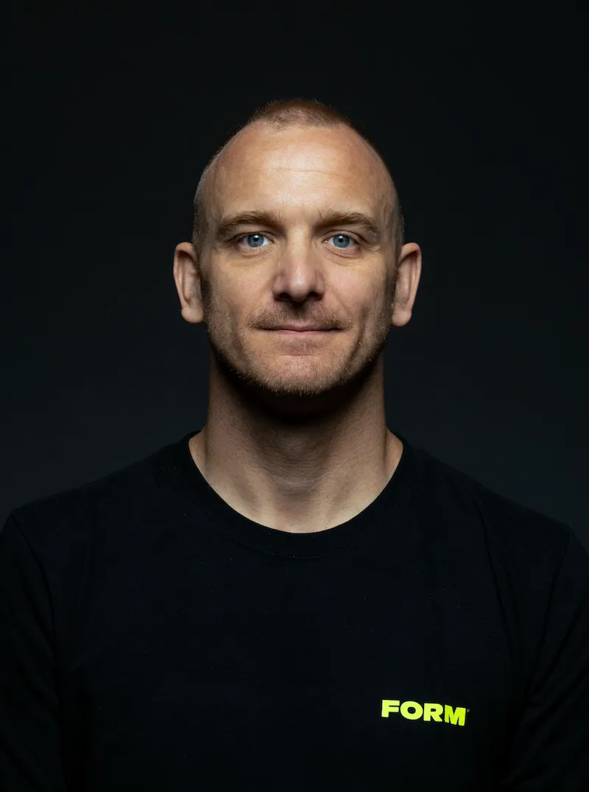
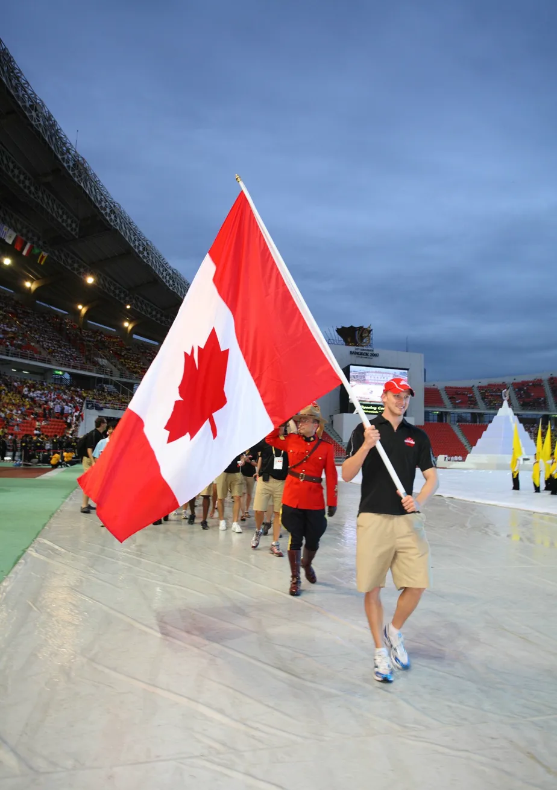

Data Scientist · Sports Analyst · 3× Olympian
Where elite athletic intelligence meets data science


Flag Bearer — Canada · 2007 University Games, Bangkok
I've spent my life at the intersection of athletic performance and analytical thinking. As a three-time Canadian Olympian and World Record holder in the 400m Individual Medley, I lived inside elite sport data before "sports analytics" was a job title — understanding stroke mechanics, training loads, and race strategy through feel and experience.
Now I translate that domain expertise into data science. After a Master's in Coaching Science at UBC and a Data Science diploma at BrainStation, I joined FORM Swim as Head of Coaching Science — where I've helped build production systems used by tens of thousands of athletes worldwide.
I bring something rare to sports analytics teams: I've been the athlete, the coach, and the data scientist. I understand what metrics actually matter at the elite level, and I know how to turn them into systems that drive elite performance.
A selection of data science projects spanning sports analytics, NLP, and performance modelling — from production systems used by real athletes to independent research and analysis.
Professional Work
Metric Design · Statistical Validation · Content
Devised and mathematically validated FORM Score — a 1–100 composite metric that quantifies swimming technique efficiency in a single interpretable number. Improved on legacy metrics like SWOLF by normalising for height and pool distances, then designed the scaling methodology to map raw performance variables onto a range that is both statistically rigorous and intuitive for athletes at every level. Validated the model against real athlete data before production release. Wrote all supporting content: educational blog series, in-app copy, and video explanations now embedded in the FORM app.
Read the BlogClassification · SQL · Python
Designed the complete framework for classifying swimmers into eight distinct swimmer types using three variables: FORM Score, Distance Per Stroke (DPS), and Stroke Rate (SR). Used SQL to analyse population-level data across FORM's athlete base and Python to build the classification logic — which now drives personalized coaching recommendations inside HeadCoach. Designed and wrote the full educational content system explaining each Swimmer Type, what it means for training, and how athletes progress between types over time.
Read the BlogAlgorithm Design · Python · JSON
Built the personalized workout generation engine at the core of FORM's HeadCoach feature. Wrote a Python script that takes a swimmer's objective (race preparation across pool, open water, and triathlon formats; or general improvement goals such as technique or fitness), their performance data, and their Swimmer Type to select from a library of over 200 workout templates — each written in JSON — to generate a personalized training session. Worked directly with the engineering team through the full development and deployment cycle. HeadCoach Workouts became one of the leading indicators of trial-to-subscription conversion and subscription retention.
Read the BlogSystem Design · Training Science · Domain Expertise
Designed the full logic for FORM's personalized training plan system — sequencing HeadCoach Workouts into structured multi-week plans tailored to a swimmer's goals. Developed adaptive logic covering race-specific preparation (with and without a fixed race date) and general improvement pathways, providing engineering with the complete decision framework through detailed specifications and close collaboration. The system delivers personalized coaching at scale, and contributed to measurable improvements in subscriber retention.
Read the BlogSystem Design · Personalisation · Content
Designed the logic and content framework for FORM's biggest update to HeadCoach™ — an expanded personalized coaching system that integrates a swimmer's Objective, Swimmer Type, and real-time technique data to deliver bespoke in-goggle feedback and post-swim insights at scale. The system identifies the highest-impact focus area for each swimmer and guides them toward improving it before, during, and after every workout.
Read the BlogIndependent Research & Analysis
Sports Analytics · Project
Scraped PWHL play-by-play data and merged it with historical PWHPA data to predict goals using Logistic Regression and XGBoost. Built an xG model for Women's professional hockey and applied it to evaluate player and team shot quality at even strength.
View on GitHubSports Analytics · Capstone
Used NHL basic and advanced statistics to predict and evaluate player cap hits using Linear Regression, XGBoost, Random Forest, and Clustering models. Identified which performance metrics most strongly predict market value and where players are over- or under-paid relative to their on-ice contribution.
View on GitHubNLP · Classification
Combined Twitter data with NBA game results to perform multi-class sentiment analysis using NLP, SMOTE, Logistic Regression, and Naive Bayes. Explored how on-court performance drives real-time fan sentiment and the asymmetry between wins and losses in social response.
View on GithubSports Analytics · Tableau
An interactive Tableau dashboard for professional women's hockey goalie scouting and evaluation. Visualises key performance metrics to support roster decisions and performance evaluation, bringing a data-driven lens to a position historically evaluated by eye.
View DashboardData Analysis · Visualization
Analysed ICBC accident data across Vancouver neighbourhoods using MySQL window functions and CTEs, then built Tableau dashboards to surface neighbourhood-level risk patterns and trends for city planners and insurers.
View Dashboard GitHub →Oct 2022 – Present
FORM Swim · Vancouver, BC
Domain expert bridging elite swimming knowledge and data science across all teams. Developed the FORM Score metric, the Swimmer Type classification system, the HeadCoach Workout generation engine, and the HeadCoach Plans logic — four interconnected production systems now used by tens of thousands of athletes globally.
Apr 2022 – Jul 2022
BrainStation · Vancouver, BC
Selected based on academic performance to mentor students in SQL, Tableau, machine learning, and big data analysis. Taught supplementary sessions on Python and ML model implementation.
Sep 2016 – Oct 2021
Vancouver Pacific Swim Club · Vancouver, BC
Led athlete development programming and stakeholder management across coaches, parents, board members, and facilities. Maintained operational continuity through the pandemic. Developed frameworks to track performance data for long-term athlete development.
Sep 2011 – Aug 2016
UBC Thunderbirds · Vancouver, BC
Coached varsity athletes to the provincial, national and international level. Named Junior Coach of the Year in 2012. Developed data frameworks to identify talent, recruit swimmers and maximize their potential.
2000 – 2012
Swimming Canada
Represented Canada at three Olympic Games. Broke the World Record in the 400m Individual Medley. Competed at the highest level of international sport for over a decade, developing a deep analytical understanding of performance metrics, physiological modelling, and what it takes to optimise human athletic output.
2022
BrainStation · Vancouver, BC
2009 – 2011
University of British Columbia
2001 – 2009
University of British Columbia